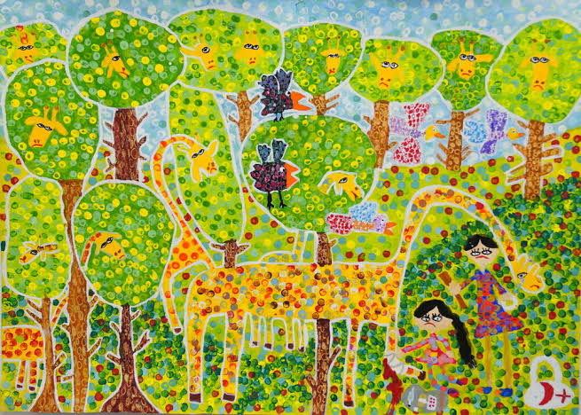

Poems
animal planet

new mammal upgrade. endorphins! i moan until april. starve myself into last year's jeans. absorb the backyard sun like a blade of grass, practice my tan like an indigenous language— in the master bedroom i replace the rifle on the wall with deer trapped in a frame—two necks twined like tree branches. i wash hippo sweat from bedsheets. the washer—a bloodbath. floorboard currency. i offer my afternoon taxes. if i were a seahorse, by now, i’d have a thousand. be gentle, be gentle, i say, as his hydraulic lowers onto my dolphin. in my silt he finds no anchorage. we bark all night, make guard dogs of men, sleep next to each other like mountains. sun-up, goats lock horns in a meadow of daffodils. i lose track of the pheromone trail. a sentence begins and ends. ant mill in a white desert. i undress myself like a piano lesson. rage locked in a room so small it can’t help but spill. two faced state, a coin-flip. which will it be—anima-animus? i say imagine: the last two white rhinos know they are the last of their kind. he says animals don’t ruminate over silly things.
Taha Ahmar Qadeer is a writer, researcher, and translator from Lahore, Pakistan. He received his BA in Psychology and Literature from Bennington College where he was a Peter Drucker Merit Scholar and is currently pursuing an MFA in Creative Writing at Washington University in St. Louis where he is a Dean’s Distinguished Graduate Fellow.